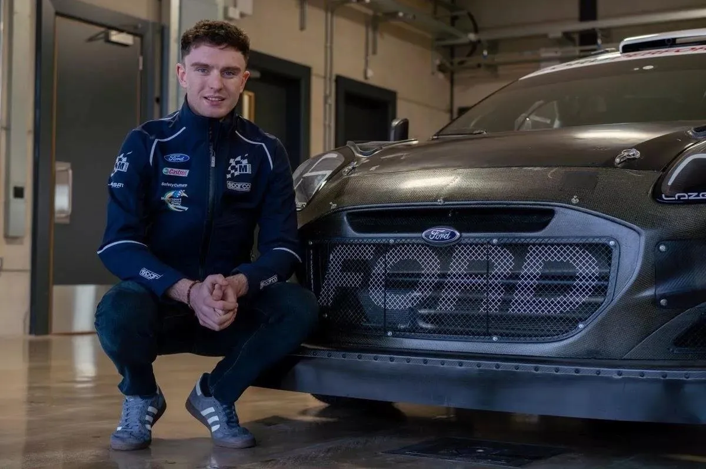
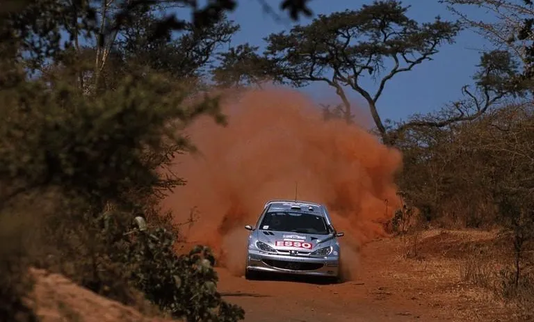
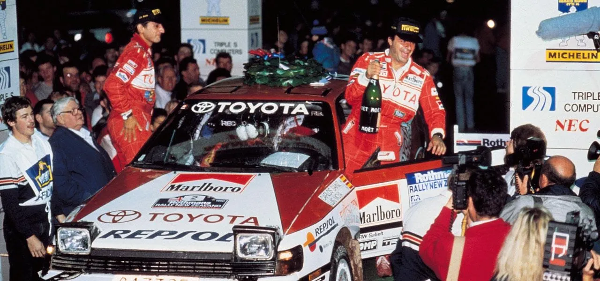
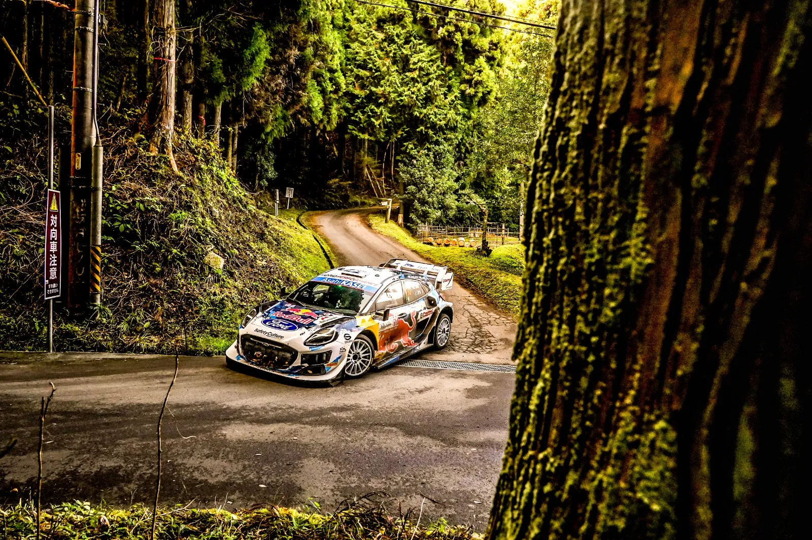
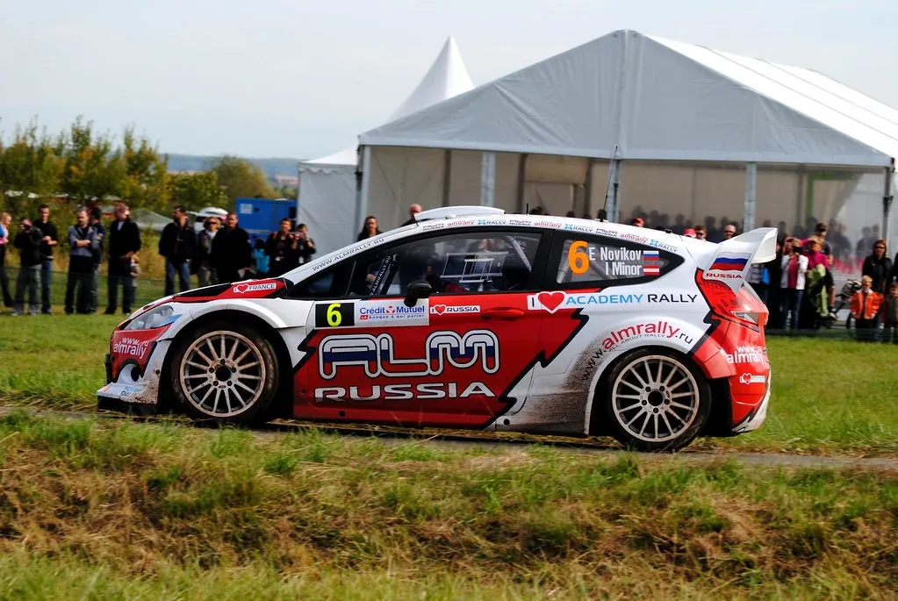
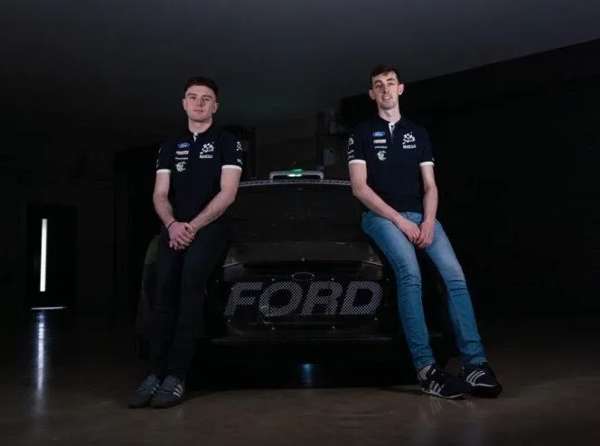
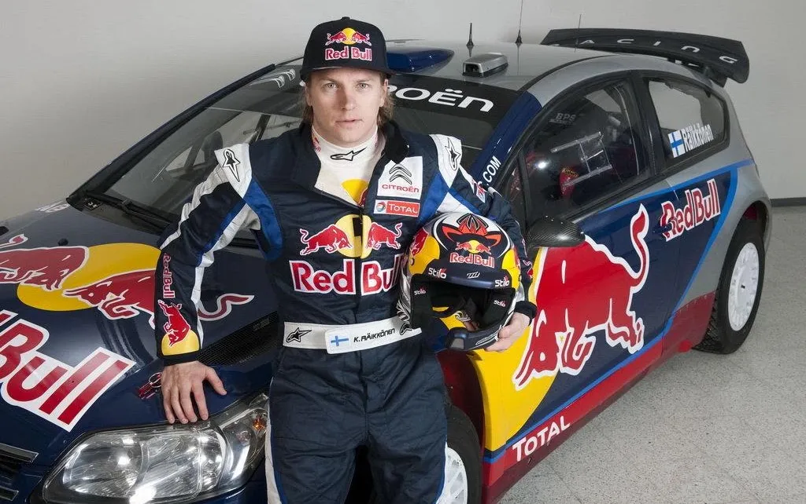
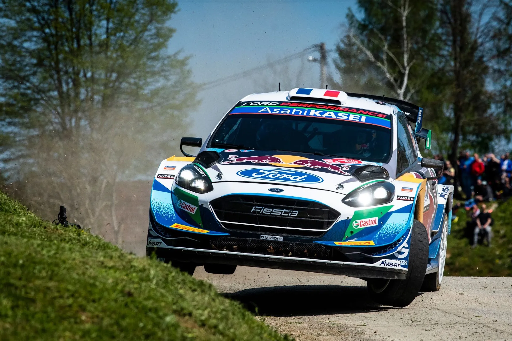

The 7 Least Experienced WRC Lineups in History
M-Sport announced yesterday that Josh McErlean will contest all rounds of the 2025 season in a Puma Rally1. That means that he and M-Sport's leading driver, Gregoire Munster, will be one of the most inexperienced driver pairings in WRC history, with only 15 entries with a top level car in the championship.
But are they the most inexperienced one? For this list, we are going to be taking a look at teams with at least two drivers in their lineup, that both competed in at least 2/3rds of the season. We will be focusing mostly on factory teams, or their B teams.
Munchi's Ford in 2007 had 13 entries amongst their Argentinian roster of drivers, but they won't find themselves in this list, as the team didn't compete in every round, and the second car switched from Raies to Villagra mid-season.
Teams that almost made the cut include M-Sport's 2015 lineup, with only 30 entries amongst its roster of drivers, the Kronos Citroën team from 2006 after Loeb's injury with 34, the 2003 factory Ford team with 44, as well as the OMV Peugeot Norway team from 2006 with 45.

McErlean's signing makes the team's lineup one of the least experienced teams ever
Picture from M-Sport
7 - 2000 - Peugeot Esso - 26 entries

Picture from Peugeot Sport
The 2000 WRC season was the French marque's first full campaign in the championship since the end of the Group B era. The team elected to not make any changes to their 1999 lineup, which contested events in the 206 part time at the end of the year. François Delecour was the more experienced out of the three drivers, so Peugeot doesn't find itself on this list with its nominated drivers for Monte-Carlo (ie Delecour and Panizzi), but with the one from Safari, where Gilles Panizzi and Marcus Gronholm were Peugeot's nominated drivers.
Gronholm had contested 20 events in a top class car up to that point, driving the 206 WRC, the Corolla WRC and the Celica Group A car among others. Panizzi had the remaining 6, driving a privateer Subaru in 1999, as well as the 206 WRC.
However, Safari wouldn't be an event to remember for Peugeot, as both Panizzi and Gronholm wouldn't make it to the end of the rally, both retiring on Saturday. That's something that would be forgotten by everyone by the end of the year though, as Peugeot and Gronholm would do the double, winning both the Driver’s and Manufacturer’s titles.
6 - 1990 - Toyota Team Europe - 22 entries

Picture from Repsol
Juha Kankkunen and Kenneth Eriksson departed Toyota at the end of the 1989 season, leaving the team with a younger lineup for 1990.
The team's new No 1 was Carlos Sainz, who had only competed in 15 WRC rounds before the season opener in Monte Carlo. Alongside him in the opener Toyota picked Armin Schwarz, with the German being the more inexperienced to his Spaniard teammate, with only 6 WRC rallies to his name.
Similarly to Peugeot in 2000, inexperience wouldn't hinder Toyota, with Sainz winning his first title in 1990, with the team finishing 2nd in the Constructors behind Lancia.
5 - 2024 - M-Sport - 21 entries

@ World / Red Bull Content Pool
M-Sport’s lineup from the season just past finds itself on this list. The Dovenby Hall based outfit brought back Adrien Fourmaux after a year in WRC2, and signed Gregoire Munster alongside him, with the Luxembourger competing in 2 events at the end of the 2023 season.
This would be Fourmaux's break out year, with the Frenchman finishing on the podium 5 times across the season, and showing eye-catching pace. His performances would give him the chance to drive Hyundai's third car for the 2025 season.
4 - 2012 - M-Sport - 17 entries

Michael Jenkins / flickr
A sponsorless M-Sport B team in 2012 had a young driver lineup contesting a full season. The team featured Russian Evgeniy Novikov, who had competed in the WRC with Citroën's Junior Team in 2009, as well as 2011 in a Ford Fiesta RS WRC. The team's second driver was a young Ott Tänak, fresh off his debut in a WRC car in the 2011 season finale.
It would be a year of learning for both drivers, with both having many accidents throughout the year. Both Tänak and Novikov would finish on the podium though, with Novikov finishing 2nd twice, in Portugal and Sardinia, and Tänak finishing 3rd behind his teammate in Sardinia.
3 - 2025 - M-Sport - 15 entries

Picture from M-Sport
Our most recent inclusion on this list is what's due to be M-Sport's 2025 lineup!
The team retained Gregoire Munster for the upcoming WRC season, with his 15 rallies in a Rally1 being the only ones contributing in M-Sport's tally. Josh McErlean has never driven a Rally1 before, and is set to make his debut in one in the Monte-Carlo Rally.
2 - 2010 - Citroën Junior Team - 13 entries

Citroën's Junior Team for the 2010 season had 2007 F1 Champion Kimi Raikkonen, and Sebastien Ogier, in his second full season in the WRC. Raikkonen hadn't competed with a WRC car before, with Ogier set to compete in his second full campaign in a C4 WRC.
Raikkonen's year would be full of growing pains, with the Finn crashing out of rallies more often than he'd finish them. His highest finish of the season would be 5th in Turkey.
Ogier on the other hand would enjoy a much better campaign, winning his first WRC rally in Portugal, and being called up to the senior team for the season's remaining gravel rallies. Ogier would also win in Japan, and would drive for the main team full-time in 2011.
1 - 2021 - M-Sport - 11 entries

Jaanus Ree / Red Bull Content Pool
The last year of the 2017 spec WRC cars saw M-Sport field an unproven lineup for the majority of the rallies. Sure, there was Teemu Suninen driving the second car part time, but his time with the team would end after Rally Estonia.
Gus Greensmith was the team’s number one driver having driven the Fiesta WRC in 2019 and 2020 part-time. Suninen was sharing the second car with then newcomer Adrien Fourmaux, who hadn't driven a WRC car in the championship at that point in time. So when Fourmaux made his debut in Croatia, M-Sports two drivers had just 11 entries in a WRC car among them.
Fourmaux would finish 5th on his debut, showing impressive pace throughout the rally.
It would be a difficult year for M-Sport, with the team failing to score a single podium across the season.
Did we miss any? Be sure to let us know in the replies!


Comments